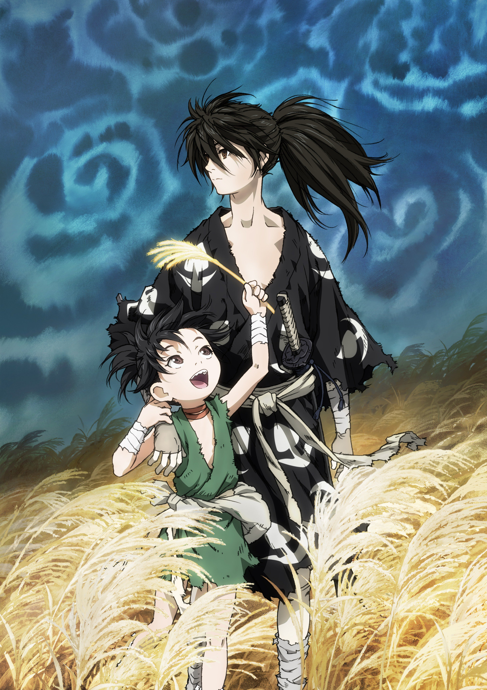

| Название | |
|---|---|
Дороро/Dororo |
|
Описание |
|
|
В стране царит смута, и один из генералов жаждет во что бы то ни стало одержать победу в решающей битве, которая ни много ни мало сулит ему трон всей страны. Для этого он решается на страшный грех и заключает сделку с двенадцатью демонами: те помогают ему выиграть бой, а он за это отдаёт каждому из них одну из частей тела своего новорождённого сына. Обречённый на гибель мальчик, тем не менее, выживает благодаря помощи доктора, создавшего для него протезы-оружие. Преданный собственным отцом, юноша ничего так не желает, как отомстить родителю, но для этого ему сперва необходимо убить каждого демона и вернуть отнятые части тела, по одной за раз. На своём пути охоты и истребления демонов молодой человек встречает сироту Дороро, который утверждает, что является величайшим вором Японии. Объединившись, они вместе отправляются в трудный путь, полный опасностей и приключений. |
|
|  | |